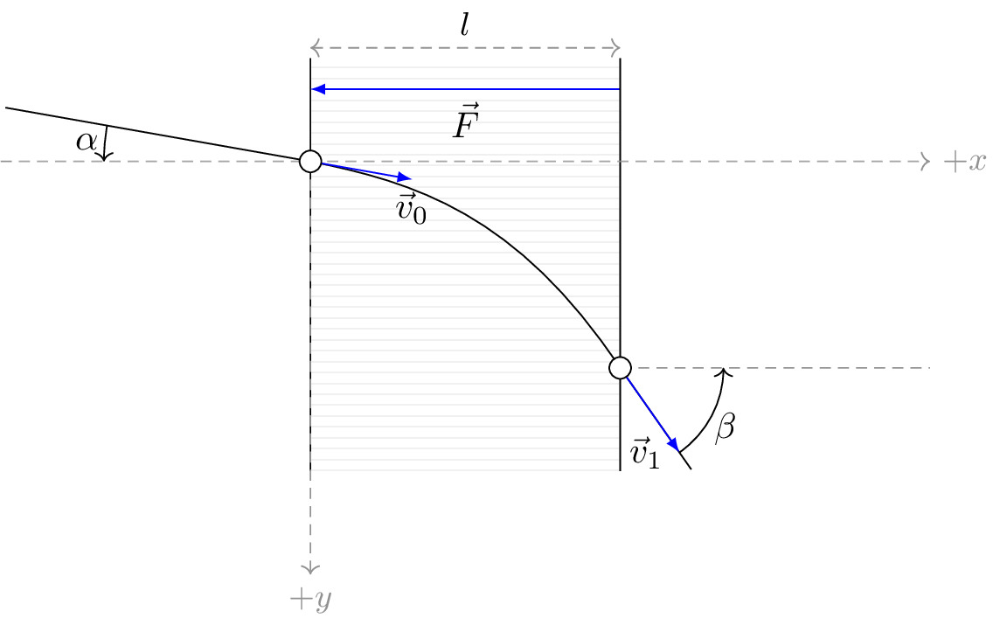

pre.tex
\documentclass[tikz]{standalone}\input{pre.tex}\begin{document}\begin{tikzpicture}[
force/.style={>=latex,draw=blue,fill=blue},
axis/.style={densely dashed,gray,font=\small},
M/.style={rectangle,draw,fill=lightgray,minimum size=0.5cm,thin},
m/.style={rectangle,draw=black,fill=lightgray,minimum size=0.3cm,thin},
plane/.style={draw=black,fill=blue!10},
string/.style={draw=black, thick},
pulley/.style={thick},
acceleration/.style={>=open triangle 60,draw=blue,fill=blue},
inforce/.style={force,double equal sign distance=2pt},
interface/.style={
pattern = north east lines,
draw = none,
pattern color=gray!60,
},
]
\draw[draw=none, pattern=horizontal lines, pattern color=black!6] (0,-2) rectangle (3,2);
\draw[thin] (0,-2) -- (0,2);
\draw[force, <-] (0,1.7) -- node[below] {$\vec{F}$} (3,1.7);
\draw[thin] (3,-2) -- (3,2);
\draw[axis,<->] (0,2.1) -- node[above, black] {$l$} (3,2.1);
\draw (0,1) .. controls (1,0.8) and (2,0.5) .. (3,-1);
\draw (0,1) coordinate (A) -- ++(170:3);
\draw (3,-1) coordinate (B) -- ++(-55:1.2);
\draw[axis,->] (A) ++ (-3,0) -- ++(9,0) node [right] {$+x$};
\draw[axis,->] (A) -- ++(0,-4) node [below] {$+y$};
\draw[axis] (B) -- ++ (3,0);% -- ++(-9,0);
% \draw[axis,->] (0,0) -- ++(5,0) node [right] {$x$};
\draw[force,->] (A) -- ++(-10:1) node[below] {$\vec{v}_0$};
% \draw[force,->] (A) -- ++(-1,0) node[above] {$\vec{f}_R$};
% \draw[fill=white] (0,0) ++(-0.2,0.2) rectangle ++(0.4,-0.4);
\draw[fill=white] (A) circle (3pt);
\draw[force,->] (B) -- ++(-55:1) node[left, xshift=-1pt] {$\vec{v}_1$};
\draw[fill=white] (B) circle (3pt);
\draw[->] (A)++(170:2) arc (170:180:2);
\path (A)++(175:{2cm+5pt}) node {$\alpha$};
\draw[->] (B)++(-55:1) arc (-55:0:1);
\path (B)++(-30:{1cm+5pt}) node {$\beta$};
\end{tikzpicture}\end{document}